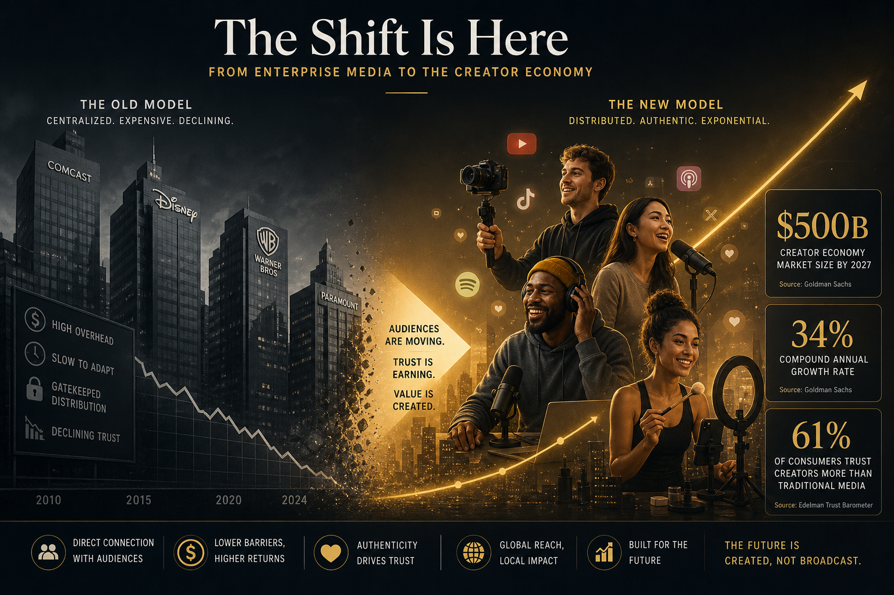

The enterprise media playbook — gated reports, sponsored supplements, six-figure event sponsorships — worked for thirty years. In 2026, it is falling apart at the seams. The creator economy is no longer a footnote in media earnings calls; it is the main event.
The $500 Billion Reality Check
Goldman Sachs pegged the creator economy at $480 billion in 2025 and projects it will surpass $500 billion by the end of this year. That figure now exceeds the combined revenues of the five largest legacy media conglomerates. The math is brutal for traditional publishers: while enterprise media advertising revenues declined 8.2 per cent year-over-year in Q1 2026, creator-led media grew 34 per cent over the same period.
This is not about teenagers dancing on TikTok. The shift is structural. B2B creators on LinkedIn, Substack, and YouTube are capturing the exact audience that enterprise publishers once monopolised — VPs, directors, C-suite executives with purchasing authority. A single Substack newsletter on SaaS metrics can command a $500 CPM, five times what a legacy digital display ad fetches.

Why Creators Are Winning the Trust Game
Enterprise media's credibility crisis is well-documented. Edelman's 2026 Trust Barometer shows trust in traditional business media fell to 38 per cent, the lowest since tracking began. Creator-led media sits at 61 per cent. The gap is widening.
Three dynamics drive this:
- Skin in the game. Creators who build audiences in venture capital, cloud infrastructure, or supply chain logistics are practitioners first, publishers second. Their readers know this. When a former VP of Engineering writes about Kubernetes migration pain points, she has lived it. When a staff writer at a legacy outlet covers the same topic from a press release, readers can tell.
- Direct monetisation alignment. Creators earn from audience quality, not advertising volume. This eliminates the perverse incentive to chase clicks at the expense of depth. The best B2B creators — think Lenny Rachitsky, Packy McCormick, or Emily Zhang — build subscription businesses where every paid subscriber represents genuine value delivered.
- Distribution ownership. Enterprise publishers rent their audiences from platforms. Creators own their email lists, Discord servers, and podcast feeds. When algorithm changes hit, creators adapt. When they hit legacy publishers, layoffs follow.
The Data That Should Worry Every Media Executive
Consider these numbers from Q1 2026:
YouTube: Creator channels in the "business and technology" category grew viewership 42 per cent year-over-year. Enterprise media channels in the same category declined 11 per cent.
Newsletters: The top 50 B2B Substack newsletters now collectively reach 8.4 million subscribers, up from 5.1 million a year ago. The top 50 enterprise media newsletters lost 6 per cent of subscribers in the same period.
Events: Creator-led conferences (like Lenny & Friends, SaaStr, and OnDeck summits) saw ticket revenue increase 58 per cent. Legacy media events saw flat or declining attendance outside of tentpole brands.
Advertising: Brands allocated 23 per cent of their B2B media budgets to creator partnerships in 2026, up from 14 per cent in 2024, according to eMarketer.
The reallocation is accelerating because the ROI is measurable. A sponsored deep-dive on a creator's newsletter generates, on average, 3.7x the qualified leads per dollar spent compared to a display campaign on a legacy business publication. Marketers have noticed.
What This Means for the Upside Model
At Upside Journal, we are building at the intersection of both worlds. The creator-meets-journalism model takes the editorial rigour and institutional credibility of traditional media and combines it with the audience intimacy and distribution agility of the creator economy.
This is not a theoretical exercise. Our editorial columns — Market Signal, Deal Flow, The Stack — follow the data-driven, practitioner-authored model that creator audiences reward with attention and loyalty. But unlike a solo creator, we invest in editorial standards, fact-checking, and multi-voice coverage that solo operators cannot sustain at scale.
The future of business media is neither pure legacy nor pure creator. It is a hybrid: institutional quality with creator-native distribution. The publications that understand this will eat the ones that do not.
The Numbers to Watch
Three metrics will determine who wins the next two years:
Subscriber acquisition cost (SAC). Creators acquire subscribers at $2–5 per head through organic content. Enterprise publishers spend $15–30 through paid channels. As organic discovery on platforms like LinkedIn and YouTube continues to favour individual voices over brand accounts, this gap will widen.
Revenue per subscriber. The best creator-led media businesses generate $150–400 per subscriber annually through a mix of subscriptions, sponsorships, and events. Legacy digital media averages $8–15 per unique visitor annually. The economics are not close.
Content velocity. A solo B2B creator publishes 3–5 pieces per week with near-zero marginal cost. An enterprise media team publishes the same volume with 10x the overhead. AI-assisted workflows — the kind tools like The Pitch Journey enable for founders — are helping creators maintain quality at speed.
The creator economy is not a trend. It is a structural realignment of how business audiences consume, trust, and pay for information. Enterprise media can adapt, merge, or decline. The numbers say most will do the latter.
YouTube Embed: The Creator Economy Report 2026 & Beyond — A comprehensive breakdown of creator economy growth data and projections.
About the Author
Olusegun (Olu) Olufunmiloye — Olu is the Publisher of Upside Journal, founder of CNE Concepts Ltd, CNE Studios and Cocoa Soft Africa. He writes thought pieces with focus on using AI in 2026 for business.